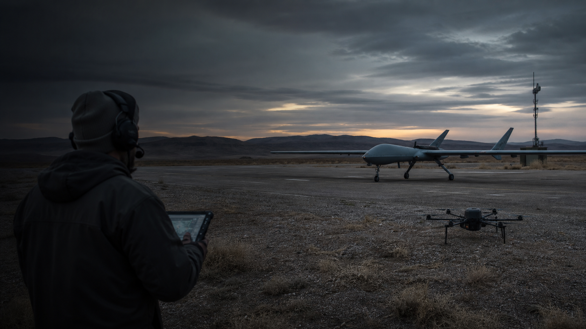

Portare un ordine.
Tecnologia militare · il tempo come vantaggio
LA GUERRA
ACCELERA.
Per secoli il vantaggio è dipeso anche dagli strumenti disponibili. Oggi non conta soltanto avere l’arma più avanzata: conta vedere, capire e decidere prima dell’avversario.
Panoramica verificata al 16 luglio 2026
01Vedere02Collegare03Capire04Decidere05Agire
Prima delle aziende
Gli strumenti cambiano.
La ricerca del vantaggio no.
Coordinare a distanza.
Vedere ciò che l’occhio non vede.
Unire sensori, persone e sistemi.
Un vantaggio tecnico può comprimere i tempi, aumentare la precisione delle informazioni e rendere possibile un coordinamento prima impraticabile. Nel software, pochi anni di ritardo possono accumularsi tra dati, integrazione, addestramento e capacità industriale fino a sembrare un abisso.
Ma la tecnologia non vince da sola. Strategia, logistica, persone, territorio, produzione e alleanze possono pesare quanto il sistema più sofisticato. Questa pagina segue una trasformazione, non formula una legge della storia.
Non sono un analista militare e questa non è una vetrina commerciale né una guida operativa. Il dossier usa programmi pubblici per capire un cambiamento, distingue fonti governative e dichiarazioni aziendali e mantiene visibili errori, responsabilità e controllo umano.
01 · Il software della decisione
PALANTIR
costruisce il quadro.
Palantir non costruisce il drone o il missile. Costruisce il livello software che unisce sensori, immagini, mappe e rapporti, li rende leggibili e li porta dentro una decisione. È qui che la sua tecnologia più avanzata diventa importante: non aggiunge soltanto informazioni, prova a comprimere il tempo tra ciò che viene rilevato e ciò che un comando decide di fare.
“Hanno trovato
Bin Laden.”
Palantir è spesso associata alla caccia a Osama bin Laden, anche perché il suo software era presente nel mondo dell’antiterrorismo statunitense. Ma la frase è più leggenda aziendale che fatto dimostrato: non esiste una conferma pubblica chiara che sia stata Palantir a localizzarlo.
Un mosaico, non
un algoritmo magico.
La ricostruzione pubblica della CIA parla di anni di intelligence, analisi e lavoro sulla rete dei corrieri. La storia corretta è meno cinematografica ma più utile: Palantir è diventata potente perché aiuta persone e organizzazioni a collegare frammenti che, separati, dicono poco.
Maven Smart System
NON UNA KILLSTREAK.
Una kill chain reale.
In una dimostrazione pubblica del 2026, un ufficiale del Pentagono riassume il passaggio dalla selezione di un veicolo a una proposta d’azione con tre gesti: «left click, right click, left click». Non è soltanto un’interfaccia più bella. È il tentativo di concentrare in una sola schermata un processo che prima richiedeva più sistemi e più passaggi.
Click 01Seleziona
→
Un oggetto già rilevato e identificato nel quadro operativo.
Click 02Apri l’azione
→
Il sistema presenta opzioni e risorse disponibili.
Click 03Avvia il flusso
La proposta entra nella catena di approvazione e targeting.
Il giocatore attiva il Lodestar e controlla dall’alto un sistema d’arma con un’interfaccia costruita per essere immediata e spettacolare. È finzione: errore, responsabilità e conseguenze reali restano fuori dallo schermo.
Apri il video a schermo intero ↗La mappa reale è più ordinata: dati diversi vengono fusi, il veicolo viene isolato e il software propone una risorsa. L’interfaccia riduce l’attrito proprio dove le conseguenze non sono virtuali.
Apri il video a schermo intero ↗01NATO · COMANDO
Molti paesi.
Una mappa comune.
Maven Smart System NATOLa NATO descrive MSS NATO come una capacità comune basata sui dati per supportare fusione dell’intelligence, consapevolezza del campo, pianificazione e decisioni più rapide. È un esempio vicino all’Italia: il problema non è soltanto raccogliere informazioni, ma farle parlare tra alleati diversi.
La NATO ha acquisito il sistema nel 2025 e lo sta integrando anche nelle proprie esercitazioni. “Più rapido” non significa automaticamente “più corretto”.Fonte NATO ↗02US ARMY · ISR
Molti sensori.
Poco tempo.
TITANTITAN è una stazione terrestre mobile dell’esercito statunitense. Riceve dati da sensori spaziali, aerei e terrestri e usa AI e machine learning per supportare intelligence, comprensione della situazione e individuazione degli obiettivi.
È progettata per accorciare il percorso tra sensore e sistema d’azione. Non è essa stessa un’arma e i dettagli operativi non sono interamente pubblici.Fonte US Army ↗03AI · CONTROLLO
Un modello propone.
Qualcuno risponde.
AIP for DefenseAIP for Defense permette di usare modelli commerciali o interni su reti militari, definendo accessi e registrando le operazioni. L’idea è portare un modello vicino ai dati riservati senza consegnargli automaticamente ogni permesso.
Tracciabilità, audit e “guardrail” sono capacità dichiarate da Palantir: non dimostrano da sole che ogni configurazione o impiego sia sicuro, legittimo o accurato.Fonte Palantir ↗La nuova catena
Dal segnale
all’azione.
Seleziona un passaggio. Il diagramma mostra che cosa cambia, chi può intervenire e dove si sposta il rischio. Palantir e Anduril sono esempi dentro un ecosistema molto più ampio, non proprietari esclusivi di una fase.
→
→
→
→
01 · input
Vedere ciò che sta accadendo.
Radar, satelliti, telecamere e altri sensori producono segnali separati. Prima di qualsiasi decisione serve capire che cosa è stato rilevato, con quale qualità e con quale margine di errore.

02 · coordinare e agire
ANDURIL
porta la rete nel mondo fisico.
Sensori, velivoli, sistemi subacquei e intercettori diventano nodi di una stessa architettura. Il centro della rete si chiama Lattice.
Il sistema nervoso
Lattice trasforma oggetti separati
in una sola mappa operativa.
Raccoglie dati da sensori e veicoli diversi, costruisce una rappresentazione condivisa dell’ambiente e permette a un operatore di assegnare missioni a più sistemi autonomi. Anduril dichiara supervisione umana: non significa che ogni funzione venga pilotata a mano.
Lattice Command & Control ↗01Rilevare
→
Sensori · radar · veicoli
02Costruire una mappa
→
Fusione e classificazione dei dati
03Assegnare un’azione
Operatore · software · sistemi
I sistemi essenziali
Quattro sistemi.
Una sola architettura.
Qui restano solo i programmi che spiegano davvero la strategia: aria, attacco a distanza, fondale e difesa contro i droni. “Autonomo” descrive navigazione o missione; non garantisce da solo come venga esercitato il controllo umano.
01ARIA · CCA
Fury
YFQ‑44A
L’aereo autonomoÈ il prototipo senza pilota di Anduril per il programma Collaborative Combat Aircraft dell’US Air Force: un velivolo progettato per un’elevata autonomia e per cooperare con aerei pilotati.
Il programma è in sviluppo. Raggio, velocità, armamento e capacità operative dettagliate non sono pubblici.Fonte USAF ↗02ARIA · EFFETTO
Barracuda
100M · 250M · 500M
I missili modulariLe varianti Barracuda‑M sono una famiglia di missili da crociera in tre taglie. L’idea industriale è riutilizzare componenti e processi comuni per produrre più facilmente sistemi diversi.
Portata, costo e semplicità produttiva sono in gran parte dichiarazioni di Anduril; non vanno trattate come prestazioni verificate in modo indipendente.Scheda Anduril ↗03MARE · XL-AUV
Ghost
Shark
Il sottomarino senza equipaggioTecnicamente è un XL‑AUV: un grande veicolo subacqueo autonomo sviluppato in Australia per missioni a lunga distanza, intelligence, sorveglianza e ricognizione. Non trasporta un equipaggio.
Payload e prestazioni operative restano in gran parte riservati; “autonomo” non dice da solo quali decisioni siano delegate.Governo australiano ↗04C‑UAS · VTOL
La catena
contro‑drone
Sensori, disturbo, intercettoNon è un solo prodotto: Sentry e Wisp rilevano, Lattice fonde i dati, Pulsar può disturbare i segnali, mentre Anvil o il VTOL Roadrunner possono intercettare.
Sentry / Wisp→Lattice→Pulsar→Anvil / Roadrunner
Ogni anello ha limiti tecnici e regole d’impiego diverse. Velocità, raggio e payload di Roadrunner non sono pubblici.Roadrunner ↗Più velocità nella decisione.
Meno tempo per correggere un errore?
Automatizzare percezione, navigazione e coordinamento può ridurre l’esposizione dei soldati e reagire più rapidamente. Può anche comprimere il tempo disponibile per verificare un bersaglio, capire un errore del sensore o stabilire la responsabilità.
“Human in the loop” non è un interruttore unico. Bisogna chiedere: l’essere umano autorizza la missione, il bersaglio, l’arma o ogni singola azione? La risposta cambia da sistema a sistema e spesso non è interamente pubblica.
Fonti del dossier
- Palantir · AIPCon 9, demo MavenDimostrazione pubblica del flusso di targeting e della sequenza descritta come tre click.
- Business Insider Taiwan · La demo dei tre clickResoconto della dimostrazione e del passaggio da più sistemi a un unico ambiente.
- Wired · Palantir e l’antiterrorismo CIAPresenza del software Palantir nel centro antiterrorismo e funzione di collegamento dei dati.
- CIA · Ricostruzione della caccia a Bin LadenAnni di operazioni e analisi d’intelligence, compreso il lavoro sulla rete dei corrieri.
- Call of Duty Wiki · LodestarFunzionamento della scorestreak usata nel confronto visivo.
- NATO NCIA · Maven Smart System NATOAcquisizione, impieghi dichiarati e ruolo nella fusione dei dati e nella pianificazione.
- NATO JWC · Integrazione di MSS NATOAddestramento e integrazione del sistema nelle esercitazioni dell’Alleanza.
- US Army · TITANPrototipi, sensori utilizzati e supporto all’intelligence e all’individuazione degli obiettivi.
- Palantir · AIP for DefenseDescrizione aziendale di modelli, reti, tracciabilità e controlli di accesso.
- Anduril · Lattice Mission AutonomyCoordinamento di sistemi autonomi, assegnazione di missioni e supervisione.
- US Air Force · YFQ‑44ADesignazione ufficiale di Fury nel programma Collaborative Combat Aircraft.
- Anduril · BarracudaFamiglia 100M, 250M e 500M e dichiarazioni del produttore sull’architettura modulare.
- Australia Defence · Ghost SharkContratto quinquennale e investimento per la flotta XL-AUV.
- Anduril · SentryFamiglia di torri e sensori autonomi per sorveglianza e contro-droni.
- Anduril · PulsarSistemi di guerra elettromagnetica in configurazioni diverse.
- Anduril · RoadrunnerVTOL riutilizzabile e variante Roadrunner‑M per difesa aerea.
- Anduril · EagleEyeFamiglia di visori, elmetti e integrazione con Lattice.
Le fonti governative descrivono programmi e acquisizioni; le pagine di Palantir e Anduril descrivono soprattutto le capacità dichiarate dai produttori. Dove manca una conferma indipendente, il testo evita di trasformare un claim in una prestazione verificata. La selezione non è un catalogo completo.